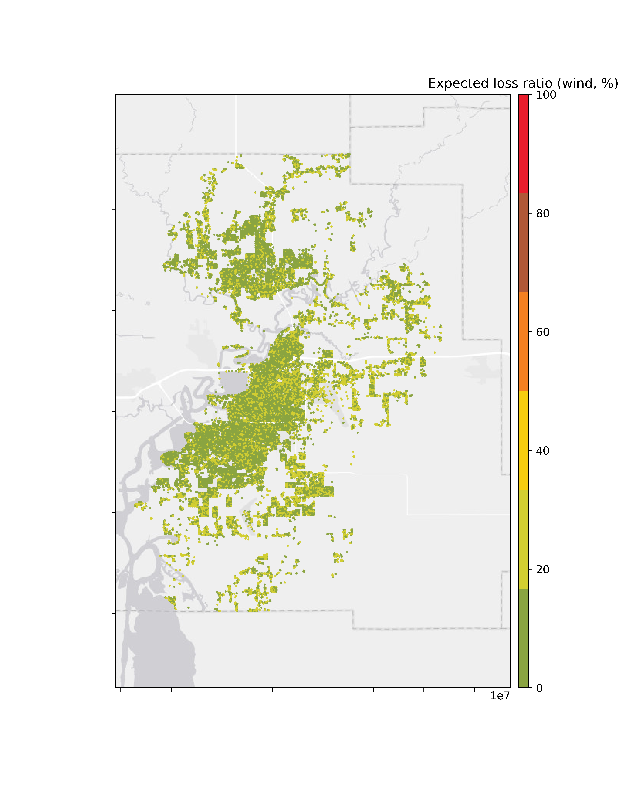

4.6. Damage and Loss Estimation¶
The initial implementation of the hurricane testbed, which is described here, is limited to consideration of wind and storm surge (i.e., flood) damage and losses. Further, the calculation of wind effects does not require structural analysis to estimate EDPs, but rather adopts an approach where damage and losses are calculated directly from the wind speed. Similarly, the flood-induced loss calculation is based on the peak water depth. Damage and loss functions from the HAZUS Multi-hazard Loss Estimation Methodology ([FEMA18a], [FEMA18b]) were implemented in PELICUN to support the damage and loss assessment.
For the wind loss assessment, the HAZUS functions consist of tabular data to describe the fragility or expected losses as a function of peak wind speed (PWS). These data were used to calibrate coupled damage and loss models to estimate the damage state and the corresponding expected loss ratio for each building configuration in PELICUN. Continuous functions (Normal or Lognormal cumulative density functions) were fit to the synthetic data by maximizing the likelihood of the observations assuming a Binomial distribution of outcomes at each discrete wind speed in the HAZUS database. Only data up to 200 mph wind speeds were used because the substantial reduction in the number of observations introduces significant measurement error above that level (Fig. 4.6.1). Coupling the damage and loss models in this way ensures more realistic outcomes (e.g., a building with no damage cannot have total loss when the two models are coupled), and the parameterized models allow for more efficient storage and computations within the workflow.

Fig. 4.6.1 Fitted HAZUS wind damage functions for example building classes.¶
The HAZUS damage and loss functions are grouped into five main classes by building material, with additional subclasses by building type. For each building class, e.g., wood single-family homes 1-2+ stories, a collection of attributes are used to define key features of the load path and components (e.g., roof shape, secondary water resistance, roof deck attachment, roof-wall connection, shutters, garage) as well as the exposure (terrain roughness previously estimated in the Wind Hazard Model) to assign the corresponding fragility. A rules engine was developed using a combination of historical New Jersey model building codes, surveys capturing owner-driven mitigation actions (e.g., [Javeline19]), and market data to assign these attributes to each parcel based on age and other available building information (e.g., MOD IV data). Libraries of damage and loss functions associated with storm surge from the USACE and other recent studies in the literature are planned for future releases of PELICUN. Eventually, these damage and loss descriptions will be supplemented with more advanced models as the testbed is progressively refined to include component-based fragilities and fault-trees that capture cascading damage sequences resulting from breaches of the building envelope.
The total loss from wind is estimated by the “wind-only” losses.
However, it is nonetheless clear that neither wind nor storm surge damages are uniformly and randomly distributed throughout a structure. Wind damage is most frequently initiated at the roof and fenestrations (i.e., windows, doors, or other openings in the building envelope), whereas flood damage is most frequently initiated at the lowest elevations of the structure (e.g., basement or first finished floor) and progresses upward through the structure as the depth of flooding increases. HAZUS used an approach for incorporating the non-uniformity of wind and flood damage into the combined loss methodology, which is based on allocating wind and flood losses to building sub-assemblies as a function of the building type and the overall wind-only and flood-only loss estimate.
This so-called building sub-assembly approach can more accurately apply the combination calculation above to each sub-assembly instead of applying it to the entire building. Specifically, HAZUS groups the loss components into a consistent set of building sub-assemblies:
Note
- HAZUS building sub-assemblies ([FEMA18a]):
Foundation: Includes site work, footings, and walls, slabs, piers or piles.
Below First Floor: Items other than the foundation that are located below the first floor of the structure such as mechanical equipment, stairways, parking pads, break away flood walls, etc.
Structure Framing: Includes all of the main load carrying structural members of the building below the roof framing and above the foundation.
Roof Covering: Includes the roof membrane material and flashing.
Roof Framing: Includes trusses, rafters, and sheathing.
Exterior Walls: Includes wall covering, windows, exterior doors, and insulation.
Interiors: Includes interior wall and floor framing, drywall, paint, interior trim, floor coverings, cabinets, counters, mechanical, and electrical
The following shows a sensitivity study of building attributes.
Fig. 4.6.2 1975¶ |
Fig. 4.6.3 1985¶ |
Fig. 4.6.4 1995¶ |
Fig. 4.6.5 2005¶ |
Fig. 4.6.6 2015¶ |
Fig. 4.6.7 1975¶ |
Fig. 4.6.8 1985¶ |
Fig. 4.6.9 1995¶ |
Fig. 4.6.10 2005¶ |
Fig. 4.6.11 2015¶ |
Fig. 4.6.12 Stories=1, RoofHeight=12, RoofSlope=0, Garage=0.0¶ |
Fig. 4.6.13 Stories=1, RoofHeight=12, RoofSlope=0, Garage=1.1¶ |
Fig. 4.6.14 Stories=1, RoofHeight=18, RoofSlope=0.33, Garage=0.0¶ |

Fig. 4.6.15 Stories=1, RoofHeight=18, RoofSlope=0.33, Garage=1.1¶ |
Fig. 4.6.16 Stories=1, RoofHeight=18, RoofSlope=0.67, Garage=0.0¶ |
Fig. 4.6.17 Stories=1, RoofHeight=18, RoofSlope=0.67, Garage=1.1¶ |
Fig. 4.6.18 Stories=2, RoofHeight=24, RoofSlope=0, Garage=0.0¶ |
Fig. 4.6.19 Stories=2, RoofHeight=24, RoofSlope=0, Garage=1.1¶ |
Fig. 4.6.20 Stories=2, RoofHeight=30, RoofSlope=0.33, Garage=0.0¶ |
Fig. 4.6.21 Stories=2, RoofHeight=30, RoofSlope=0.33, Garage=1.1¶ |
Fig. 4.6.22 Stories=2, RoofHeight=30, RoofSlope=0.67, Garage=0.0¶ |
Fig. 4.6.23 Stories=2, RoofHeight=30, RoofSlope=0.67, Garage=1.1¶ |
Fig. 4.6.24 Stories=1, RoofHeight=12, RoofSlope=0, Garage=0.0¶ |
Fig. 4.6.25 Stories=1, RoofHeight=12, RoofSlope=0, Garage=1.1¶ |
Fig. 4.6.26 Stories=1, RoofHeight=18, RoofSlope=0.33, Garage=0.0¶ |
Fig. 4.6.27 Stories=1, RoofHeight=18, RoofSlope=0.33, Garage=1.1¶ |
Fig. 4.6.28 Stories=1, RoofHeight=18, RoofSlope=0.67, Garage=0.0¶ |
Fig. 4.6.29 Stories=1, RoofHeight=18, RoofSlope=0.67, Garage=1.1¶ |

Fig. 4.6.30 Stories=2, RoofHeight=24, RoofSlope=0, Garage=0.0¶ |
Fig. 4.6.31 Stories=2, RoofHeight=24, RoofSlope=0, Garage=1.1¶ |
Fig. 4.6.32 Stories=2, RoofHeight=30, RoofSlope=0.33, Garage=0.0¶ |
Fig. 4.6.33 Stories=2, RoofHeight=30, RoofSlope=0.33, Garage=1.1¶ |
Fig. 4.6.34 Stories=2, RoofHeight=30, RoofSlope=0.67, Garage=0.0¶ |
Fig. 4.6.35 Stories=2, RoofHeight=30, RoofSlope=0.67, Garage=1.1¶ |
- FEMA18a(1,2)
FEMA (2018), HAZUS – Multi-hazard Loss Estimation Methodology 2.1, Hurricane Model Technical Manual, Federal Emergency Management Agency, Washington D.C., 718p.
- FEMA18b
FEMA (2018), HAZUS – Multi-hazard Loss Estimation Methodology 2.1, Flood Model Technical Manual, Federal Emergency Management Agency, Washington D.C., 569p.
- Javeline19
Javeline, D. and Kijewski-Correa, T. (2019) “Coastal Homeowners in a Changing Climate,” Climatic Change. 152(2), 259-276 https://doi.org/10.1007/s10584-018-2257-4